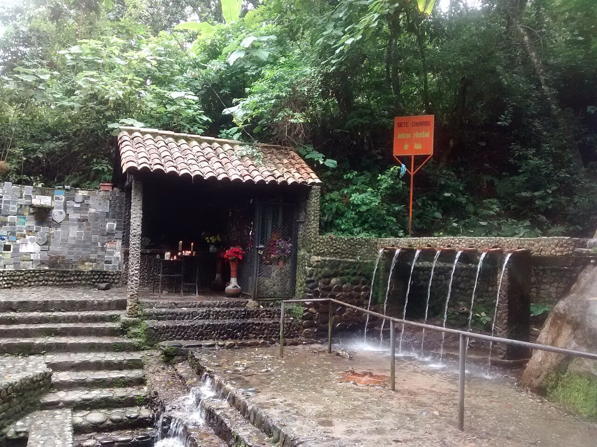
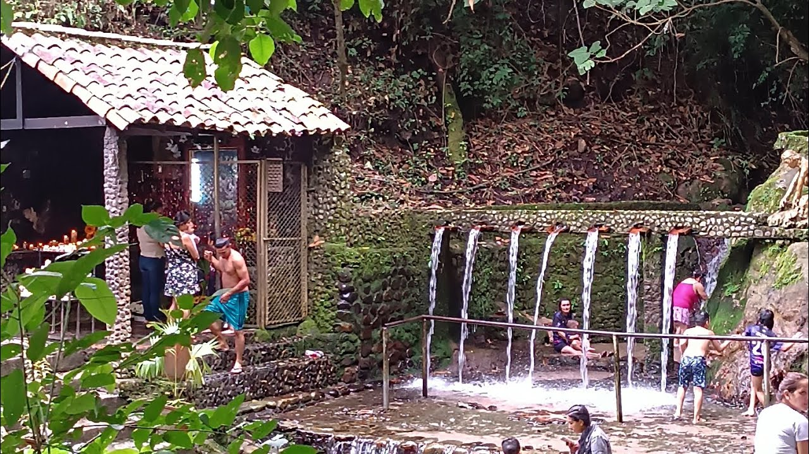

El Santuario de la Virgen de Belén y el paraje conocido como "Los Siete Chorros" son el corazón místico y espiritual de Salazar de las Palmas. La devoción, que data del año 1671, cuenta que la Virgen (conocida cariñosamente por los habitantes como "La Ojona" por sus ojos grandes y expresivos) se apareció en un humilde lienzo a una joven indígena llamada Catalina, de la tribu de los Cineras, mientras lavaba ropa en las orillas del río en el cerro de La Belén.
Lo que comenzó como un pequeño milagro local se transformó rápidamente en el principal punto de peregrinaje del departamento. El obispo de la época ordenó la construcción de una capilla que hoy alberga cientos de placas de acción de gracias de feligreses que afirman haber recibido milagros, sanaciones y favores de la Virgen.
Hoy en día, los visitantes recorren un hermoso camino de piedra, flanqueado por inmensos árboles centenarios, orquídeas salvajes y el canto de aves endémicas, para llegar al balneario natural y sagrado. La tradición ancestral exige un ritual: pasar y sumergirse bajo cada uno de los siete chorros de agua pura y helada que brotan de la montaña. Según la creencia popular, este acto no solo purifica el alma y el cuerpo, sino que garantiza que la petición a la Virgen será escuchada.
El santuario se encuentra en la parte alta del municipio. Desde el parque principal, puedes realizar una caminata de ascenso moderado de unos 30 minutos disfrutando de la naturaleza o tomar un "mototaxi" típico de la región.

